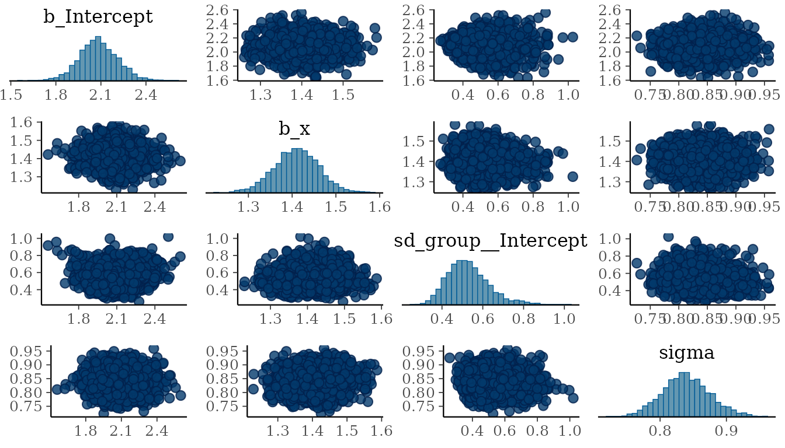
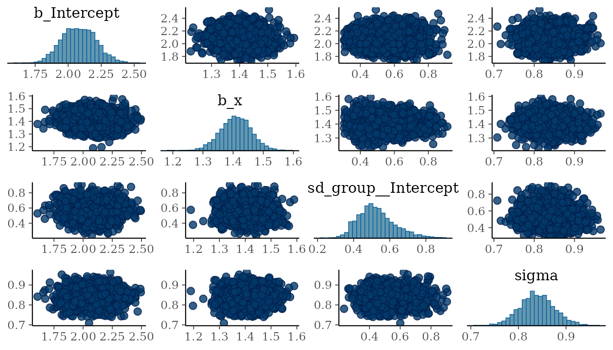

This vignette walks through the full workflow for compressing a
brms::brmsfit, then reconstructing it for use with the
standard brms post-processing functions
(predict(), posterior_predict(),
pp_check(), …). It requires brms +
cmdstanr + a working CmdStan install.
The chunks below that fit Stan models are gated with
instantiate::stan_cmdstan_exists(), so the vignette still
builds on machines that do not have CmdStan installed (e.g. CI runners).
Install CmdStan once with:
poco::check_and_install_cmdstanr()
cmdstanr::check_cmdstan_toolchain(fix = TRUE)
cmdstanr::install_cmdstan()The model must use the cmdstanr backend so that
compress_brmsfit() can reach the CSV draws.
library(brms)
#> Loading required package: Rcpp
#> Loading 'brms' package (version 2.23.0). Useful instructions
#> can be found by typing help('brms'). A more detailed introduction
#> to the package is available through vignette('brms_overview').
#>
#> Attaching package: 'brms'
#> The following object is masked from 'package:stats':
#>
#> ar
library(dplyr)
#>
#> Attaching package: 'dplyr'
#> The following objects are masked from 'package:stats':
#>
#> filter, lag
#> The following objects are masked from 'package:base':
#>
#> intersect, setdiff, setequal, union
set.seed(1)
n_groups <- 20; n_per <- 15
dat <- expand.grid(group = 1:n_groups, rep = 1:n_per)
dat$x <- rnorm(nrow(dat))
re <- rnorm(n_groups, 0, 0.5)
dat$y <- 2 + 1.5 * dat$x + re[dat$group] + rnorm(nrow(dat), 0, 0.8)
fit <- brm(
y ~ x + (1 | group),
data = dat,
backend = "cmdstanr",
chains = 4,
iter = 2000,
warmup = 1000,
refresh = 0
)
#> Start sampling
#> Running MCMC with 4 sequential chains...
#>
#> Chain 1 finished in 0.4 seconds.
#> Chain 2 finished in 0.4 seconds.
#> Chain 3 finished in 0.4 seconds.
#> Chain 4 finished in 0.4 seconds.
#>
#> All 4 chains finished successfully.
#> Mean chain execution time: 0.4 seconds.
#> Total execution time: 2.1 seconds.
#> Loading required namespace: rstanA single call returns both the compressed posterior and the brms fit structure. Save them separately so the structure can be reused with any future updates to the compressed posterior.
result <- compress_brmsfit(
fit,
method = "mclust",
n_components = 5
)
#> ℹ mclust: trying all 14 covariance models c(EII, VII, EEI, VEI, EVI, VVI, EEE, VEE, EVE, VVE, EEV, VEV, EVV, VVV) and picking the best by BIC (n = 4000, d = 27).
#> ℹ mclust: selected model 'VEV' with G = 5 (BIC = 205,090.9) out of 14 candidate models: EII, VII, EEI, VEI, EVI, VVI, EEE, VEE, EVE, VVE, EEV, VEV, EVV, VVV.result$compressed carries the GMM parameters;
result$structure is the original brmsfit,
which we keep so that downstream methods can be re-attached.
fit_recon <- reconstruct_brmsfit(result)
new_data <- data.frame(x = seq(-2, 2, length.out = 20),
group = rep(1:5, each = 4))
p <- predict(fit_recon, newdata = new_data)
pp <- posterior_predict(fit_recon, newdata = new_data)Use bayesplot::mcmc_pairs() to compare the original and
reconstructed draw geometry on the same subset of parameters.
library(bayesplot)
#> This is bayesplot version 1.15.0
#> - Online documentation and vignettes at mc-stan.org/bayesplot
#> - bayesplot theme set to bayesplot::theme_default()
#> * Does _not_ affect other ggplot2 plots
#> * See ?bayesplot_theme_set for details on theme setting
#>
#> Attaching package: 'bayesplot'
#> The following object is masked from 'package:brms':
#>
#> rhat
pair_pars <- c("b_Intercept", "b_x", "sd_group__Intercept", "sigma")
draws_orig <- posterior::as_draws_array(fit, variable = pair_pars)
draws_recon <- posterior::as_draws_array(fit_recon, variable = pair_pars)
bayesplot::mcmc_pairs(draws_orig, pars = pair_pars)
bayesplot::mcmc_pairs(draws_recon, pars = pair_pars)
MCMC diagnostics (Rhat, ESS) are not preserved
by the regenerated draws.
compress_brmsfit() shares the same method
argument as compress_posterior(). To use a different
backend, e.g. mvdens GMM:
result <- compress_brmsfit(
fit,
method = "mvdens_gmm",
n_components = 5
)(Requires the suggested mvdens package -
remotes::install_github("NKI-CCB/mvdens").)
sessionInfo()
#> R version 4.6.0 (2026-04-24)
#> Platform: x86_64-pc-linux-gnu
#> Running under: Ubuntu 24.04.4 LTS
#>
#> Matrix products: default
#> BLAS: /usr/lib/x86_64-linux-gnu/openblas-pthread/libblas.so.3
#> LAPACK: /usr/lib/x86_64-linux-gnu/openblas-pthread/libopenblasp-r0.3.26.so; LAPACK version 3.12.0
#>
#> locale:
#> [1] LC_CTYPE=C.UTF-8 LC_NUMERIC=C LC_TIME=C.UTF-8
#> [4] LC_COLLATE=C.UTF-8 LC_MONETARY=C.UTF-8 LC_MESSAGES=C.UTF-8
#> [7] LC_PAPER=C.UTF-8 LC_NAME=C LC_ADDRESS=C
#> [10] LC_TELEPHONE=C LC_MEASUREMENT=C.UTF-8 LC_IDENTIFICATION=C
#>
#> time zone: UTC
#> tzcode source: system (glibc)
#>
#> attached base packages:
#> [1] stats graphics grDevices utils datasets methods base
#>
#> other attached packages:
#> [1] bayesplot_1.15.0 dplyr_1.2.1 brms_2.23.0 Rcpp_1.1.1-1.1
#> [5] poco_0.2.0
#>
#> loaded via a namespace (and not attached):
#> [1] gtable_0.3.6 tensorA_0.36.2.1 QuickJSR_1.9.2
#> [4] xfun_0.57 bslib_0.10.0 ggplot2_4.0.3
#> [7] htmlwidgets_1.6.4 processx_3.9.0 inline_0.3.21
#> [10] lattice_0.22-9 callr_3.7.6 vctrs_0.7.3
#> [13] tools_4.6.0 ps_1.9.3 generics_0.1.4
#> [16] stats4_4.6.0 parallel_4.6.0 tibble_3.3.1
#> [19] cmdstanr_0.9.0 pkgconfig_2.0.3 Matrix_1.7-5
#> [22] data.table_1.18.4 checkmate_2.3.4 RColorBrewer_1.1-3
#> [25] S7_0.2.2 desc_1.4.3 RcppParallel_5.1.11-2
#> [28] distributional_0.7.0 lifecycle_1.0.5 compiler_4.6.0
#> [31] farver_2.1.2 stringr_1.6.0 textshaping_1.0.5
#> [34] Brobdingnag_1.2-9 codetools_0.2-20 htmltools_0.5.9
#> [37] mvdens_1.1.0 sass_0.4.10 yaml_2.3.12
#> [40] pillar_1.11.1 pkgdown_2.2.0 jquerylib_0.1.4
#> [43] cachem_1.1.0 StanHeaders_2.32.10 bridgesampling_1.2-1
#> [46] abind_1.4-8 mclust_6.1.2 nlme_3.1-169
#> [49] rstan_2.32.7 posterior_1.7.0 tidyselect_1.2.1
#> [52] digest_0.6.39 mvtnorm_1.3-7 stringi_1.8.7
#> [55] reshape2_1.4.5 labeling_0.4.3 fastmap_1.2.0
#> [58] grid_4.6.0 cli_3.6.6 magrittr_2.0.5
#> [61] loo_2.9.0 pkgbuild_1.4.8 withr_3.0.2
#> [64] scales_1.4.0 backports_1.5.1 rmarkdown_2.31
#> [67] matrixStats_1.5.0 otel_0.2.0 gridExtra_2.3
#> [70] instantiate_0.2.3 ragg_1.5.2 coda_0.19-4.1
#> [73] evaluate_1.0.5 knitr_1.51 rstantools_2.6.0
#> [76] rlang_1.2.0 glue_1.8.1 jsonlite_2.0.0
#> [79] plyr_1.8.9 R6_2.6.1 systemfonts_1.3.2
#> [82] fs_2.1.0